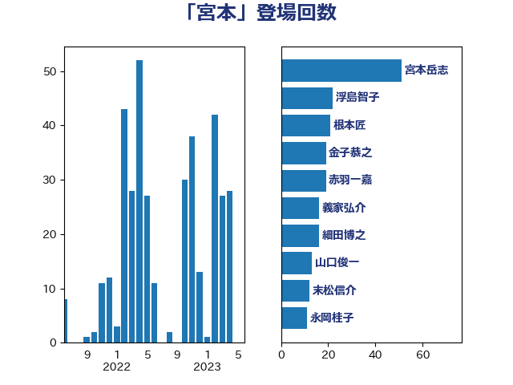

単語「宮本」

| 宮本岳志 | 日本共産党 | 51 回 |
| 浮島智子 | 公明党 | 22 回 |
| 根本匠 | 自由民主党 | 21 回 |
| 金子恭之 | 自由民主党 | 19 回 |
| 赤羽一嘉 | 公明党 | 19 回 |
| 義家弘介 | 自由民主党 | 16 回 |
| 細田博之 | 自由民主党 | 16 回 |
| 山口俊一 | 自由民主党 | 13 回 |
| 末松信介 | 自由民主党 | 12 回 |
| 永岡桂子 | 自由民主党 | 11 回 |
| 宮内秀樹 | 自由民主党 | 10 回 |
| 阿部知子 | 立憲民主党 | 7 回 |
| 石橋通宏 | 立憲民主党 | 7 回 |
| 山谷えり子 | 自由民主党 | 7 回 |
| 鬼木誠 | 立憲民主党 | 6 回 |
| 鈴木俊一 | 自由民主党 | 5 回 |
| 酒井庸行 | 自由民主党 | 5 回 |
| 塚田一郎 | 自由民主党 | 5 回 |
| 黄川田仁志 | 自由民主党 | 4 回 |
| 海江田万里 | 立憲民主党 | 4 回 |
| 櫻井周 | 立憲民主党 | 4 回 |
| 橋本岳 | 自由民主党 | 4 回 |
| 宮本周司 | 自由民主党 | 4 回 |
| あかま二郎 | 自由民主党 | 4 回 |
| 芳賀道也 | 国民民主党 | 3 回 |
| 松村祥史 | 自由民主党 | 3 回 |
| 岸田文雄 | 自由民主党 | 3 回 |
| 山東昭子 | 自由民主党 | 3 回 |
| 三ッ林裕巳 | 自由民主党 | 3 回 |
| 金子俊平 | 自由民主党 | 2 回 |
| 足立敏之 | 自由民主党 | 2 回 |
| 秋野公造 | 公明党 | 2 回 |
| 浜田聡 | NHK党 | 2 回 |
| 松沢成文 | 日本維新の会 | 2 回 |
| 松本剛明 | 自由民主党 | 2 回 |
| 山井和則 | 立憲民主党 | 2 回 |
| 宮下一郎 | 自由民主党 | 2 回 |
| 大島九州男 | れいわ新選組 | 2 回 |
| 吉川沙織 | 立憲民主党 | 2 回 |
| 伊藤達也 | 自由民主党 | 2 回 |
| 中田宏 | 自由民主党 | 2 回 |
| 中島克仁 | 立憲民主党 | 2 回 |
| 野田国義 | 立憲民主党 | 1 回 |
| 野田佳彦 | 立憲民主党 | 1 回 |
| 緒方林太郎 | 無所属 | 1 回 |
| 稲田朋美 | 自由民主党 | 1 回 |
| 石井正弘 | 自由民主党 | 1 回 |
| 田中英之 | 自由民主党 | 1 回 |
| 田中健 | 国民民主党 | 1 回 |
| 渡辺創 | 立憲民主党 | 1 回 |
| 武部新 | 自由民主党 | 1 回 |
| 森本真治 | 立憲民主党 | 1 回 |
| 早稲田ゆき | 立憲民主党 | 1 回 |
| 後藤茂之 | 自由民主党 | 1 回 |
| 市村浩一郎 | 日本維新の会 | 1 回 |
| 岩渕友 | 日本共産党 | 1 回 |
| 岡本あき子 | 立憲民主党 | 1 回 |
| 山田宏 | 自由民主党 | 1 回 |
| 山本香苗 | 公明党 | 1 回 |
| 小川淳也 | 立憲民主党 | 1 回 |
| 宮路拓馬 | 自由民主党 | 1 回 |
| 宮崎勝 | 公明党 | 1 回 |
| 塩川鉄也 | 日本共産党 | 1 回 |
| 吉田統彦 | 立憲民主党 | 1 回 |
| 吉川ゆうみ | 自由民主党 | 1 回 |
| 加藤勝信 | 自由民主党 | 1 回 |
| 伊藤岳 | 日本共産党 | 1 回 |
| 井野俊郎 | 自由民主党 | 1 回 |